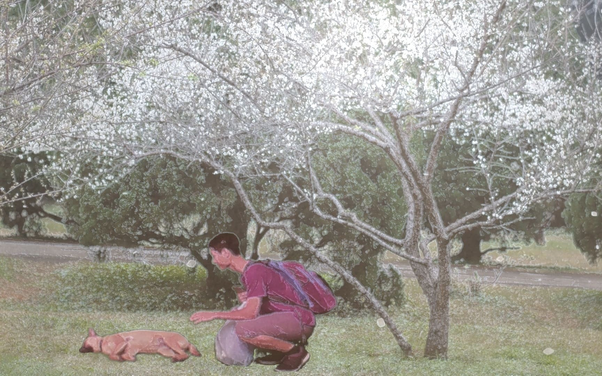
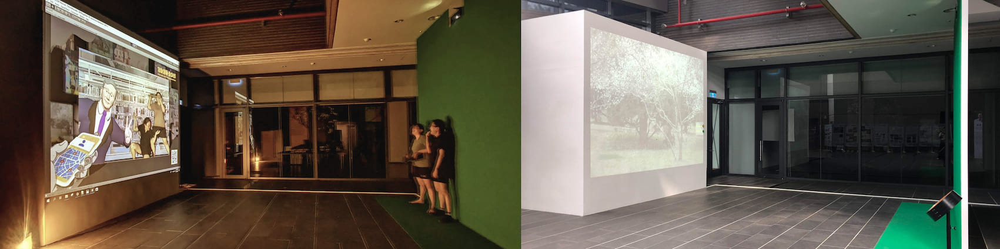
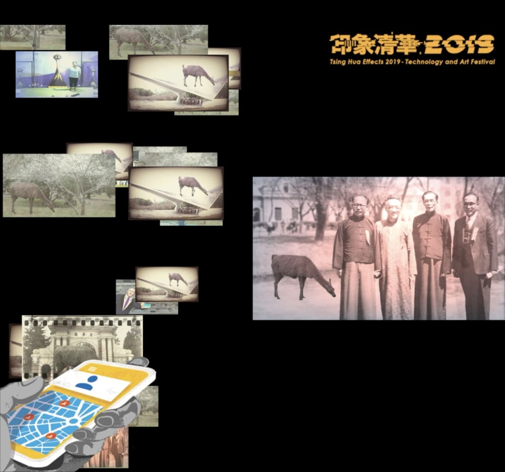
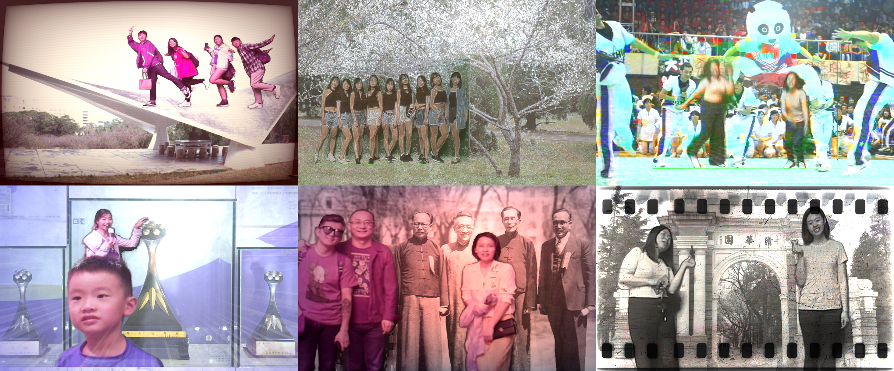

Real-Time Image Compositing
Interactive Photography
Cloud Storage System
Unity
Shih Kung Yao Ying transforms a transitional public space into a portal connecting different periods of NTHU’s history. The installation invites students and alumni to step inside archival photographs—featuring historical figures and seasonal campus landscapes—thereby collapsing temporal boundaries. Instead of viewing history as distant, participants experience it as a scene they can inhabit and interact with.
Through playful technological mediation, the work reframes photography as a bridge across time, allowing individuals to create new memories inside old images and reencounter the university’s past in a living, participatory form.
A custom projection wall displays rotating archival imagery related to NTHU. Real-time compositing overlays live participants into these scenes, allowing them to gesture toward, interact with, or “enter” elements within the photo. After capturing the final frame, the system uploads the composite image to cloud storage and generates a QR code so participants can instantly retrieve and save their personalized time-travel portrait.
As a second stage of interaction, users bring their QR-coded images to Pigeon Square, where the photographs are projected at large scale onto the surrounding architecture—extending the installation into a multi-site “temporal relay” and allowing individual memories to circulate through campus public space.

